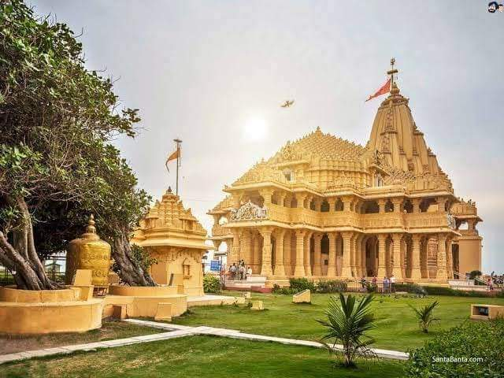
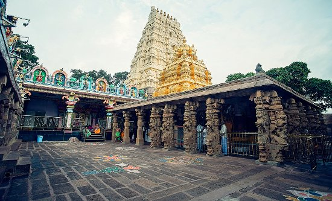
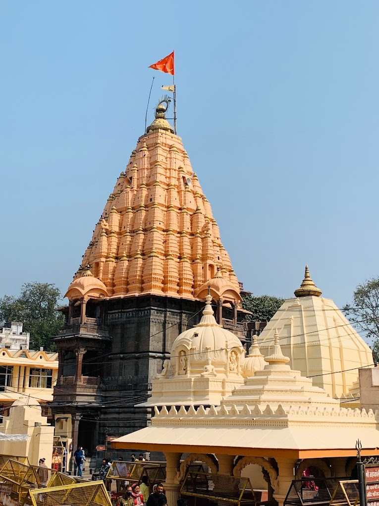
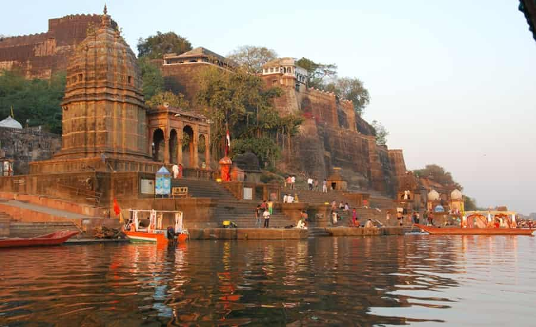
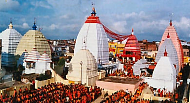
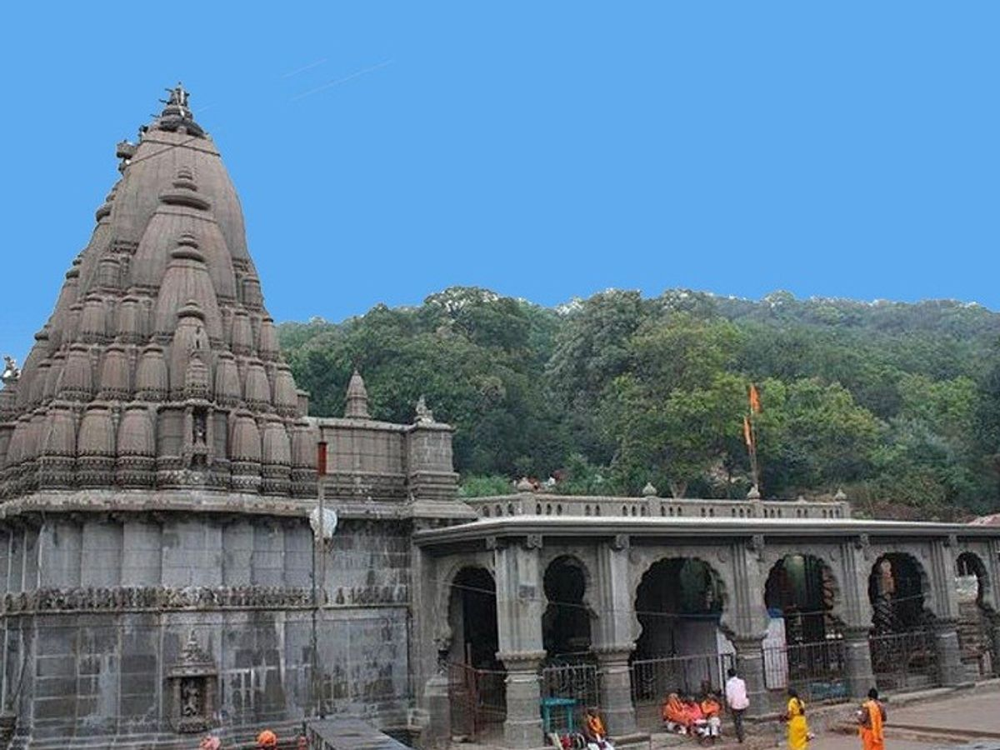
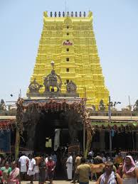
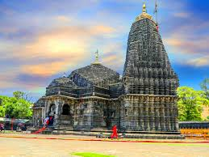
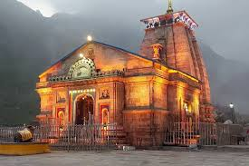
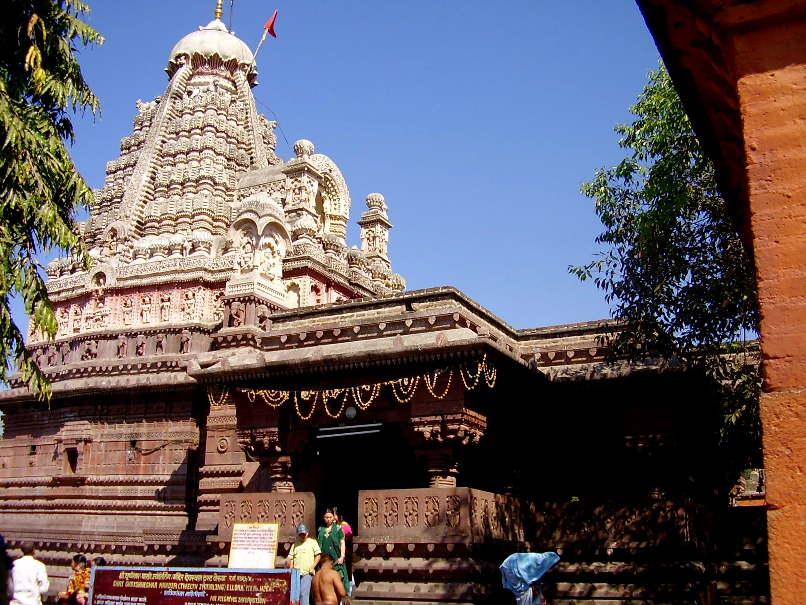

OM NAMAH SHIVAYA
12 Jyotirlingas
1. Somanath Jyotirlinga

2. Mallikarjuna Jyotirlinga

3. Mahakaleshwar Jyotirlinga

4. Omkareshwar Jyotirlinga

5. Vaidyanath Jyotirlinga

6. Bhimashankar Jyotirlinga

7. Rameswaram Jyotirlinga

8. Nageshwar Jyotirlinga

9. Kashi_viswanath Jyotirlinga

10. Trimbakeshwar Jyotirlinga

11. Kedarnath Jyotirlinga

12. Grishneshwar Jyotirlinga
